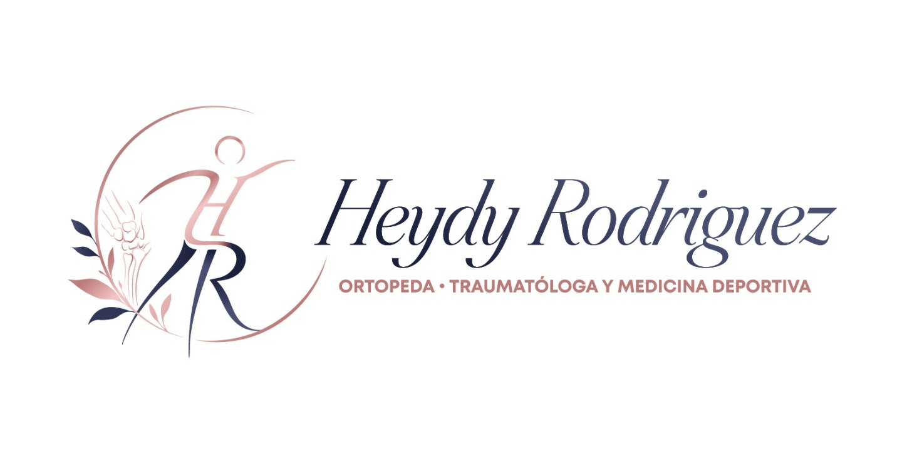

<!-- El botón móvil  -->
<button id="resMenu" type="button">
    <span class="material-symbols-outlined">menu</span>
</button>

<nav id="respNav">
    

    <ul class="menu-principal">
        <li><a href="index.html">Página Principal</a></li>

        <li class="tiene-submenu">
            <a href="#">Servicios ▾</a>
            <ul class="submenu detalles">
                <h2>Detalles</h2>
                <li>Consulta especializada en Ortopedia y Traumatología.</li>
                <li>Evaluación y tratamiento de fracturas y lesiones traumáticas.</li>
                <li>Atención de lesiones deportivas.</li>
                <li>Diagnóstico y manejo del dolor musculoesquelético.</li>
                <li>Tratamiento de tendinitis, bursitis y lesiones de tendones y ligamentos.</li>
                <li>Manejo de artrosis y enfermedades degenerativas.</li>
                <li>Evaluación de lesiones de hombro, codo, muñeca y mano.</li>
                <li>Evaluación de lesiones de cadera, rodilla, tobillo y pie.</li>
                <li>Infiltraciones articulares y de tejidos blandos.</li>
                <li>Valoración preoperatoria y seguimiento postoperatorio.</li>
            </ul>
        </li>

        <li><a href="yo.html">Acerca de mí</a></li>
        <li><a href="about.html">Políticas</a></li>
        <li><a href="contactanos.html">Contáctame</a></li>
    </ul>

    <button id="close" aria-label="Cerrar menú">X</button>

    <!-- MENU RESPONSIVE -->
    <div class="responsive_wrapper">
        <ul class="resp_mobile">
            <li>
                <a href="index.html">
                    <ion-icon class="icn" name="home"></ion-icon>
                    Página principal
                </a>
            </li>

            <li>
                    
                    <a href="yo.html">
                        <ion-icon class="icn" name="briefcase"></ion-icon>
                        Acerca de mí
                    </a>              
                              
                
                    </li>


                
                <li>
                    <a href="about.html">
                        <ion-icon  class="icn"  name="medkit"></ion-icon>
                        Politicas
                    </a>
                </li>
                  
               

                
                <li>
                    <a href="contactanos.html">
                        <ion-icon  class="icn"     name="mail-open"></ion-icon>
                        Contáctame
                    </a>
                </li>


                <li class="tiene-submenu ">
                <a href="#">
                    <ion-icon name="medical"></ion-icon>                
                    Servicios ▾
                
                </a>
                <ul class="submenu  detalles">
                    
                    <h2>Detalles</h2>
            <p>
                <li>Consulta especializada en Ortopedia y Traumatología.</li>
                <li>Evaluación y tratamiento de fracturas y lesiones traumáticas.</li>
                <li>Atención de lesiones deportivas.</li>
                <li>Diagnóstico y manejo del dolor musculoesquelético.</li>
                <li>Tratamiento de tendinitis, bursitis y lesiones de tendones y ligamentos.</li>
                <li>Manejo de artrosis y enfermedades degenerativas.</li>
                <li>Evaluación de lesiones de hombro, codo, muñeca y mano.</li>
                <li>Evaluación de lesiones de cadera, rodilla, tobillo y pie.</li>
                <li>Infiltraciones articulares y de tejidos blandos.</li>
                <li>Valoración preoperatoria y seguimiento postoperatorio.</li>
            </p>
                </ul>
            </li>

            
                    

        </ul>
    </div>
</nav>